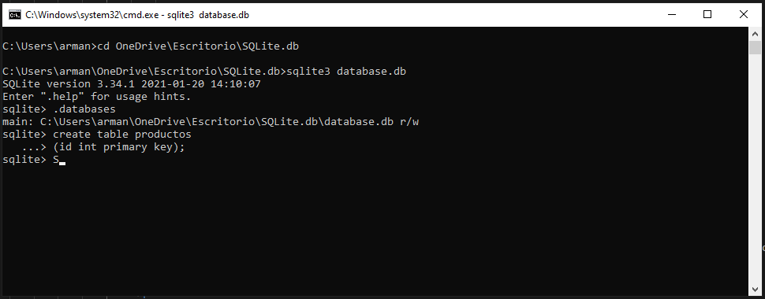

SQLite
Instalar tools
en Windows
Se debe descargar la carpeta de instalacion sqlite-tool-win32-x86 que se encuentra en el apartado Precompiled Binaries for Windows, teniendo presente que el archivo dice: tools y lo descomprimimos dentro de una carpeta en donde se generaran tres archivos.

Para ejecutar los archivos, tenemos que abrir la consola de window, mediante shift + C|D, seleccionamos la opcion de abrir ventana de PowerShell aqui

en la ventana de PowerShell primero nos ubicamos en la carpeta donde se encuentran
nuestros archivos,
utilizando los comandos ls, cd; o pondemos hacer la apertura del powerShell
desde la carpeta.
ya estando alli ubicados, escribimos .\sqlite3, a lo cual, aparece la version del
software y otros mensajes

Para tener acceso a la carpeta desde cualquier lugar del pc, creamos una carpeta en Disco
local(C:), en este caso
llamamos src, en ella pegamos la carpeta que contiene los tres archivos, copiamos la
direccion: C:\src\sqlite-tools-win32-x86-3340100
luego vamos a Este Equipo / propiedades y en configuracion avanzada del
sistema en Opciones avanzada /variables de entorno, damos doble click
en la palabra Path que se encuentra en un listado de variables; a lo cual se abre una
nueva ventana.
damo click en el boton nuevo, se abre un espacio en el listado, donde pegamos la
direccion que teniamos y luego damos en aceptar en todo.

ahora si abrimos la consola de systema windows + r : cmd y escrimos el comando sqlite3 ya tenemos acceso al software

Sentencias consulta
Para ver las sentencias de creacion de las tablas, se emplea un comando generico:
SELECT * FROM sqlite_master WHERE type = "table"
A lo cual nos genera la siguiente respuesta:
para ver la informacion de dos tablas unidad por sus PRIMARY KEY y
FOREIGN KEY,
Utilizamos los comandos JOIN, ON.
SELECT * FROM tabla1
JOIN tabla2
ON tabla1.tb2id = tabla2.id
Cabe resaltar que a diferencia de la creacion de tablas, en donde el relacionamiento
se hace desde el elementos unico especie < track < transecto < proyecto.
cuando hacemos consultas, se debe contruir la sentencia en el sentido contrario, de manera
que para saber cuantas
especies hay en un track, consultamos desde el Track
Sentencias consulta
Manejar desde Consola
Despues de hacer el proceso de instalacion, creamos una carpeta donde vamos a guardar la
BBDD,
abrimos la consola de windows (windows + r) - cmd + enter; nos dirigimos a la
carpeta de interes
mediante los comandos:
- dir: nos muestra los archivos y donde nos encontramos.
- cd [destino] : nos conduce al directorio de interes.
- cd /: nos lleva al inicio de la ruta en el Disco.
- cd ../: regresamos un directorio atras.
- cls: limpiar pantalla.
- mkdir [nombre_carpeta]: crea una carpeta.
- del [nombre_archivo]: elimina un archivo.
- rmdir [nombre_carpeta]: Elimina un directorio, solo si esta vacio.
Cuando estemos en el directorio de interes, escribimos en la consola:
sqlite3 database.db>
con esto se crea una base de datos, pero no se vera en la carpeta, hasta que trabajemos
con ella, para eso, la consultamos:
.databases
ahora si revisamos nuevamente en la carpeta podemos ver la base de datos.
Tal cual como esta, la base de datos no contiene nada, para crearle una tabla, seguidamente escribimos: create table [nombre_tabla], es de aclarar que esa sentencia esta incompleta, por lo cual en la Consola se nos muestra ..> para colocar la informacion faltante: (id int primary key);
Podemos verificar la presencia de la nueva tabla con el comando .tables, para salir escribimos .exit y para abrir esta u otra base de datos, estando en la carpeta, escribimos: sqlite3 [nombre_bd]
Comandos
Lo primero es dejar claro que los software para administracion de BBDD sqlite, como
SQLiteStudio o SQLiteAdmin Tienen limitaciones en la ejecucion de comandos,
que solo pueden ser llevados a cabo desde la consola; como el caso de los dot-commands.
Adicionalmente estos softwares crean las BBDD y tablas a travez de wigets y no de comandos.
por otro lado, siendo que SQLite es embebido, genera las bases de datos solo sentenciandolas y no
con el comando CREATE como se define en SQL.
- sqlite3 [nombreDDBB].db: funciona unicamente en la consola, crea o abre una base de datos con ese nombre, ojo: no se observa en carpeta hasta que se consulte.
- sqlite3: entra al programa, empero bloquea las demas funciones de la ventana de comandos por lo cual debemos estar en al directorio de interes con antelacion, ademas ejecuta los comandos despues, asi que mejor entrar con el comando anterior
- .open [nombreBBDD]: funciona si se ejecuto el comando anterior y SQLite esta corriendo
- .table , .tables: muestra las tablas de la BBDD
- .schema [nombreTabla]]: muestra la estructura de la tabla
- .fullschema: muestra la estructura de todas las tablas
- .output [nombreArchivo].txt: crea un archivo que recibira la siguiente consulta
- .fullschema:
- .exit, .quit: para salir
Consulta de datos
La expresion SELECT retorna informacion de consultas, puede retornar el resultado de simples operaciones aritmeticas,
es la declaracion mas compleja, y se acompaña de otras palabras reservadas para realizar su funcion.
Podemos verificar la presencia de la nueva tabla con el comando .tables, para salir escribimos .exit y para abrir esta u otra base de datos, estando en la carpeta, escribimos: sqlite3 [nombre_bd]